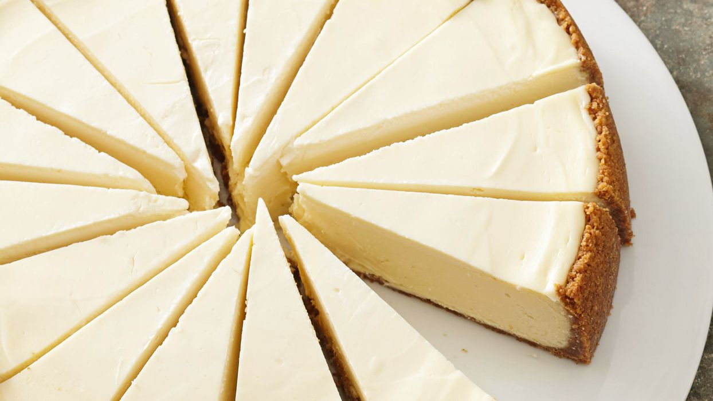

This is a classic, delicious, New York style cheesecake that I learned to love from my nana! An

Allow cream chese and eggs to stand at room temperature for 30 minutes. Meanwhile, for crust, in a large bowl crushed graham crackers, the 1 tablespoon sugar, and, if desired, the cinnamon. Stir in melted butter. Press the crumb mixture onto the bottom and about 2 inches up the sides of a 10-inch springform pan; set aside.
Preheat oven to 350°F. In a large mixing bowl beat cream cheese and the 1-1/4 cups sugar with an electric mixer on medium to high speed until fluffy. Beat in flour on low speed until smooth. Using a fork, lightly beat the eggs. Add the eggs and 3 teaspoons of the vanilla all at once, beating on low speed just until combined. Stir in 1/2 cup of the sour cream. Pour batter into the crust-lined pan. Place in a shallow baking pan in oven.
Bake for 40 minutes or until a 2 1/2-inch area around the outside edge appears set when gently shaken. Remove from oven. In a medium bowl stir together the remaining sour cream, the 1/4 cup sugar, and the remaining 1 teaspoon vanilla. Using a spoon, spread mixture evenly over top of baked cheesecake. Return to oven and bake for 15 minutes more.
Cool in pan on a wire rack for 15 minutes. Using a small sharp knife, loosen crust from sides of pan. Cool for 30 minutes more. Remove sides of pan; cool completely on rack. Cover and chill for at least 4 hours or overnight before serving. Let stand at room temperature for 15 minutes before slicing.